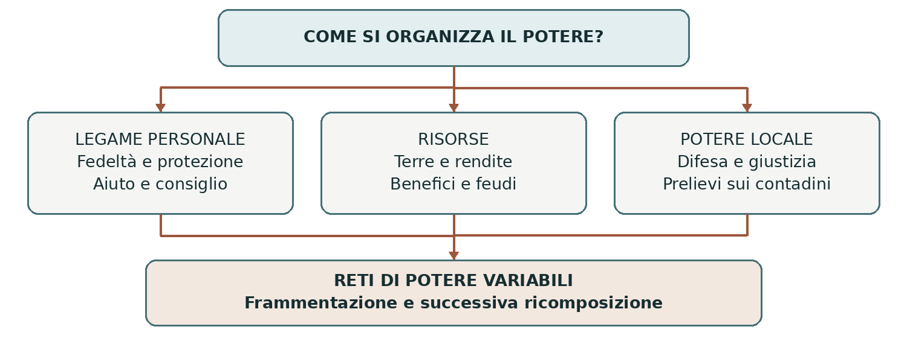

VIII–XIII secolo • Terre, fedeltà e poteri locali
Il sistema feudale
Il feudalesimo non fu un ordinamento inventato in un giorno né una piramide identica in tutta Europa. Per comprenderlo bisogna distinguere i legami tra guerrieri e signori, il possesso della terra e il potere esercitato sulle popolazioni rurali. Queste realtà si intrecciarono, ma non coincisero.
0. Domanda generatrice
Come si governava un territorio quando il re non disponeva di un’amministrazione capace di controllarlo direttamente?
In sintesi Il potere passava attraverso persone, terre e reti di fedeltà. Tali reti potevano sostenere il sovrano oppure rendere più autonomi i potenti locali.
1. Il mondo precedente
Nell’Europa dell’alto Medioevo la terra costituiva una fonte decisiva di ricchezza. Il reddito dei grandi proprietari derivava dal lavoro contadino, dai canoni e da prestazioni dovute secondo condizioni molto diverse. Re, aristocratici, vescovi e monasteri possedevano patrimoni e diritti. L’economia era prevalentemente agricola, ma mercati e moneta non erano scomparsi.
I sovrani carolingi si servivano di conti, vescovi, abati e uomini fidati per governare e combattere. Le cariche pubbliche e i rapporti personali potevano sovrapporsi senza essere la stessa cosa. Un conte esercitava un incarico; un vassallo era legato a un signore da fedeltà e obblighi reciproci. La stessa persona poteva trovarsi in entrambe le condizioni.
In sintesi Il problema era collegare autorità centrale e risorse locali in un mondo nel quale il governo dipendeva molto dalle relazioni personali.
2. Le fratture
Tra IX e X secolo le divisioni dell’impero carolingio, i conflitti tra aristocratici e le incursioni indebolirono il coordinamento regio in molte regioni. Le comunità cercavano protezione e chi disponeva di terre, uomini armati e fortificazioni poteva rafforzare il proprio potere. Non esistette però un unico momento in cui lo Stato “scomparve”.
Il controllo locale si consolidò anche attraverso l’appropriazione di prerogative pubbliche: giudicare,
imporre prelievi, organizzare la difesa. Nacquero o si ampliarono le signorie territoriali. Alcune si
appoggiavano a concessioni regie o ecclesiastiche; altre a patrimoni posseduti autonomamente e alla forza.
Per questo non ogni signoria derivava da un feudo.
In sintesi La frammentazione favorì poteri locali capaci di proteggere, comandare e prelevare risorse.
3. Attori, gruppi e conflitti
La distinzione essenziale è tra i rapporti interni alle élite e quelli che legavano i signori ai contadini.
| Attori | Obiettivi e interessi |
|---|---|
| Signore e vassallo | Persone libere, spesso appartenenti alle élite militari, unite da un rapporto personale e reciproco, ma diseguale. |
| Re e principi | Utilizzano fedeltà, concessioni, cariche e forza armata per coordinare territori e uomini. |
| Contadini | Producono risorse e subiscono o negoziano obblighi; possono essere liberi, dipendenti o servi. Non sono per questo vassalli. |
| Vescovi e monasteri | Possiedono terre e diritti; possono esercitare poteri signorili ed essere inseriti in reti politiche. |
In sintesi Un contadino dipendente e un vassallo non occupavano due gradini dello stesso rapporto giuridico: avevano obblighi di natura diversa.
4. Il processo storico
Il legame personale e la concessione
Il vassallaggio si fondava su un impegno di fedeltà, espresso attraverso riti come l’omaggio e il
giuramento. Il vassallo doveva fornire aiuto, soprattutto militare, e consiglio; il signore doveva proteggerlo
e rispettare gli impegni assunti. La relazione era asimmetrica, ma non autorizzava qualsiasi comportamento
del superiore.
Al legame poteva accompagnarsi un beneficio, poi sempre più spesso chiamato feudo: terre, entrate o
diritti concessi per sostenere il servizio. Il feudo non era necessariamente un castello con un villaggio e non
coincideva sempre con la piena proprietà. Le forme cambiarono secondo luoghi e secoli.
Ereditarietà e potere sui territori
La trasmissione dei benefici ai discendenti si affermò gradualmente. Il capitolare di Quierzy dell’877,
emanato da Carlo il Calvo prima di una spedizione in Italia, regolava soprattutto situazioni legate alla sua
assenza: non istituì da solo un’ereditarietà generale di tutti i feudi. Nel 1037 Corrado II tutelò, nel Regno
d’Italia, i benefici dei vassalli minori e la loro trasmissione ereditaria.
La signoria fondiaria derivava dal controllo di terre e dipendenti; la signoria territoriale, o di banno,
comprendeva poteri di comando sugli abitanti di un’area, anche se non coltivavano terre del signore.
Pedaggi, giustizia, prelievi e uso obbligatorio di strutture potevano farne parte. I diritti concreti variavano:
non ogni signore possedeva tutti questi poteri.
Una rete che poteva anche ricomporre il potere
Tra XI e XIII secolo re e principi utilizzarono i rapporti feudali anche per subordinare poteri locali già esistenti. Un aristocratico poteva riconoscere un superiore e ricevere formalmente come feudo beni che controllava da tempo. Il feudalesimo non significò quindi soltanto dissoluzione dell’autorità: poté diventare uno strumento di coordinamento.
La celebre “piramide feudale” è utile solo come prima semplificazione. Nella realtà esistevano fedeltà multiple, patrimoni sparsi, conflitti e diritti sovrapposti. Anche i contadini potevano negoziare collettivamente e ottenere franchigie. L’immagine di una società immobile nasconde processi di trasformazione e differenze regionali.
In sintesi Fedeltà personali, concessioni e poteri signorili si combinarono in modi mutevoli, prima nella frammentazione e poi nella ricomposizione politica.
Lo snodo decisivo
La stessa relazione che rendeva autonomo un signore rispetto a un re debole poteva essere impiegata da un re più forte per riconoscere e limitare quella autonomia.
5. Le fonti in dialogo
Fulberto di Chartres e gli obblighi reciproci
Nel 1020 il vescovo Fulberto rispose a Guglielmo, duca d’Aquitania, che gli aveva chiesto di chiarire i doveri della fedeltà. È una fonte normativa, rivolta a un potente.
Contenuto — sintesi didattica: Il fedele non deve danneggiare il signore nella persona, nella sicurezza, nell’onore e nei beni; deve contribuire con aiuto e consiglio. Anche il signore è tenuto a corrispondere lealmente agli obblighi del rapporto.
Interpretazione e limiti: Il testo descrive come ci si dovrebbe comportare, non prova che tutti rispettassero queste regole. Inoltre riguarda i rapporti tra signore e fedele: non è un contratto di lavoro contadino.
Domanda di lettura: Quale differenza c’è tra una relazione reciproca e una relazione tra persone uguali?
Fonte: Fulberto di Chartres, lettera del 1020 — Fordham University
In sintesi La reciprocità limitava teoricamente l’arbitrio, pur lasciando una forte disuguaglianza di potere.
6. Conseguenze e nuovo assetto
Si consolidò una società di diritti e obblighi differenziati. La condizione di una persona dipendeva da nascita, patrimonio, legami e appartenenze. Protezione e coercizione erano spesso due aspetti dello stesso potere: chi difendeva un territorio poteva anche imporre prelievi ai suoi abitanti.
I rapporti feudali sopravvissero alla crescita di monarchie e città, adattandosi ai nuovi assetti. Il termine “feudalesimo”, elaborato dagli studiosi molto dopo il Medioevo, comprende fenomeni diversi: per usarlo bene occorre sempre precisare il periodo e il tipo di rapporto.
In sintesi La crescita dei regni non cancellò immediatamente feudi e signorie: li inserì in equilibri nuovi.
7. Conclusione
Si governava collegando risorse e persone, senza una macchina amministrativa uniforme. Il sistema feudale diventa comprensibile quando distinguiamo il patto tra élite dalla dipendenza contadina e osserviamo come entrambi cambiarono nel tempo.
Sintesi finale La terra sosteneva ricchezza e potere. Il vassallaggio era un legame personale tra uomini liberi. Il feudo era una concessione collegata a obblighi. La signoria riguardava anche il comando sui contadini. Le reti feudali potevano frammentare o ricomporre l’autorità.
Per studiare e collegare
Coordinate essenziali
Europa occidentale, con attenzione al mondo franco e all’Italia centro-settentrionale. Formazione dall’età carolingia; trasformazioni e sistemazione giuridica tra XI e XIII secolo.
Saperi irrinunciabili
1. Feudalesimo è una categoria storiografica, non un codice unico medievale.
2. Terra, forza militare e relazioni personali sostenevano il potere.
3. Il vassallo non era un servo della gleba.
4. La fedeltà comportava aiuto e consiglio.
5. Anche il signore aveva obblighi verso il vassallo.
6. Il feudo poteva comprendere terre, entrate o diritti.
7. Quierzy non istituì improvvisamente tutti i feudi ereditari.
8. Nel 1037 furono tutelati i benefici minori nel Regno d’Italia.
9. Signoria e vassallaggio non sono sinonimi.
10. I legami feudali servirono anche a rafforzare monarchie e principati.
Mappa concettuale

I tre piani si intrecciano, ma non coincidono. Un contadino non è automaticamente un vassallo.
Strumenti e attività
Linea del tempo ragionata
| Quando | Che cosa cambia |
|---|---|
| VIII–IX secolo | I Carolingi usano rapporti personali e benefici per governare. |
| 877 | Quierzy disciplina cariche e benefici durante l’assenza del sovrano. |
| IX–XI secolo | Si consolidano poteri signorili e fortificazioni. |
| 1020 | Fulberto descrive gli obblighi reciproci della fedeltà. |
| 1037 | Corrado II tutela la trasmissione dei benefici minori. |
| XI–XIII secolo | Principi e re utilizzano i feudi per coordinare poteri locali. |
Vocabolario essenziale
Vassallaggio. Legame personale di fedeltà e servizio verso un signore.
Feudo. Bene o diritto concesso entro un rapporto di obblighi.
Allodio. Bene posseduto senza dipendere da una concessione feudale.
Banno. Potere di comandare, giudicare e imporre obblighi.
Corvée. Prestazione lavorativa dovuta al signore.
Attività di comprensione
1. Spiega perché un vassallo e un contadino dipendente non sono la stessa figura.
2. Confronta signoria fondiaria e territoriale con un esempio di potere.
3. Usa la lettera di Fulberto per discutere la frase “il signore poteva fare qualunque cosa”.
Fonti e approfondimenti
Approfondimento di storia per la classe terza. Fonti e studi per verificare e ampliare la lettura.
Treccani — Feudalesimo e problemi di definizione
Treccani — Quierzy
Treccani — Signoria